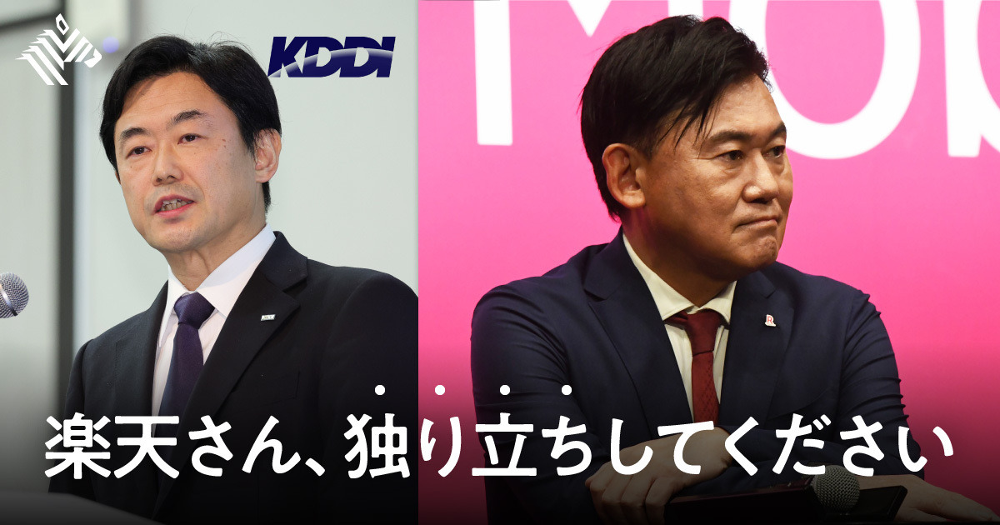
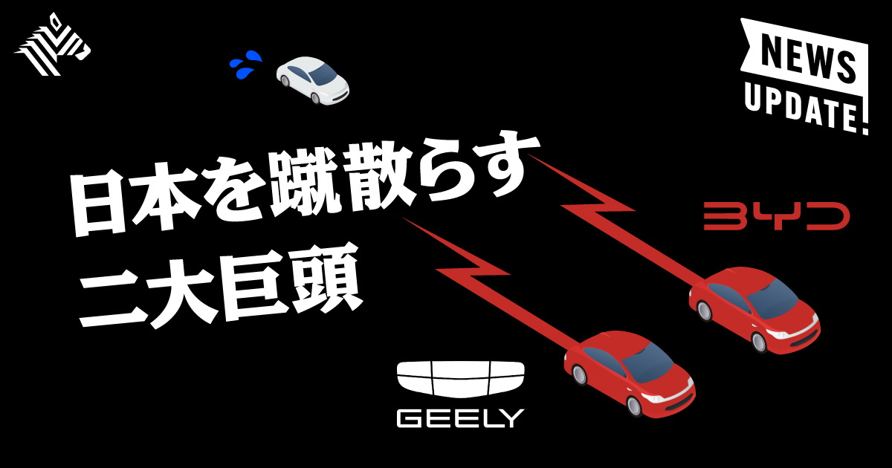
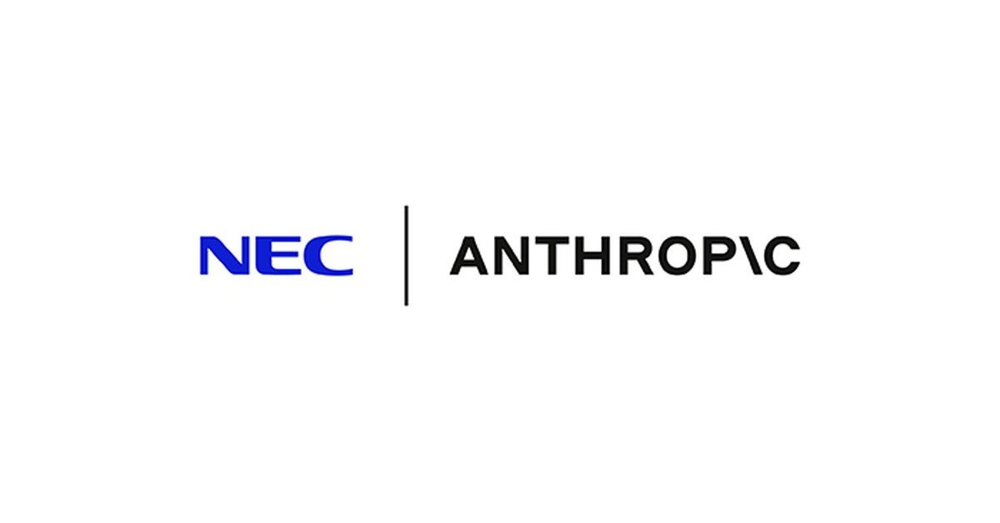

01
【解説】AIでバカにならないための、「書く技術」を教えます
発行日時：2026年9月2日 05:30 JST ・ NewsPicks編集部
あなたに関係ありそうな理由
要約や下書きをAIに任せるほど、人がどの工程で考え、判断し、責任を持つかを決める必要があるためです。
概要
この記事は、生成AIが文章の下書きや要約を急速に肩代わりするなかで、「書く」ことを単なる出力作業として手放してよいのかを問い直す。出発点は、ポール・グレアムが書く人と書かない人の分岐を、思考する人としない人の分岐に重ねた議論だ。書く途中には、論点を並べ、矛盾を見つけ、言い切れない部分を確かめ、順序を組み直す時間がある。記事は、その時間をAIに丸ごと委ねると、読みやすい文章は得られても、自分が何を理解していないかに気付きにくくなると整理する。ノースウェスタン大学ケロッグ校の研究として、AIらしい文体を多く含む研究提案は採択確率が4％高かった一方、過去に採択された提案と似通いやすかったという結果も紹介される。効率化が、既存の型への収れんと引き換えになる可能性を示す材料だ。エズラ・クラインは、AIは皆が見たものを見て既存の形式を使うと述べ、イーサン・モリックは依存も拒絶も反射的に選ばず、用途を意識して決めるよう促す。記事が実務上の手掛かりとして置くのは、カル・ニューポートの「書くことは認知の健康にとって一万歩のようなもの」という比喩である。調査、検索、事実確認、読み手からの反応にはAIを使えるが、白紙から最初の筋道をつくることや自分で直す工程は残す。表示コメントでも、AIを調査や壁打ちに使う一方、原資料を読み、最初の仮説と結論のつながりを人が確かめるべきだという意見が目立った。会議なら、AI議事録を完全な答えにせず、自分が残した違和感、未決事項、次に確認する問いと照らし合わせる。AIに任せるのは情報を集めたり表現を試したりする部分であり、何を問題とみなし、どの証拠で結論にするかは人が引き受ける。その線引きを先に置くことが、便利さで思考を薄めない書き方につながる。
実務では、AIの回答を採る前に、依頼の目的、一次資料、反証になり得る事実、最終判断者を一行ずつ置くとよい。こうした短いメモが、後から考え直すための足場になる。生成結果を採用しなかった理由も残せば、次回の指示や検証も改善できる。意思決定の前に、元記事の記述と自分の解釈を分けるだけでも、AIがもっともらしく補った部分を見つけやすくなる。
仕事や会話で使える一言
「AIに文章を任せるほど、最初の問いと最後の判断は自分で持つ必要があります。」
NewsPicks原文を読む
02
au回線が使えなくなる、楽天モバイルのピンチ
発行日時：2026年9月2日 05:30 JST ・ NewsPicks編集部

あなたに関係ありそうな理由
低価格サービスがどの設備、提携、運用コストで成り立つのかを、通信品質と収益性を分けて見る材料になるためです。
概要
この記事は、楽天モバイルがサービス開始以来、エリアや品質を補うために利用してきたKDDIのローミングが、2026年9月末を節目に大幅縮小する問題を追う。KDDIの松田浩路社長は、楽天側のエリア拡大を踏まえ、現行契約は予定どおり終了すると説明する。一方、楽天グループの三木谷浩史会長は、楽天がカバーに時間を要する地域では10月以降も継続し、自前回線で十分に覆える地域を順次縮小するという認識を示す。全国一律に同じ日に切れるのか、地域ごとにどう変わるのかは、両社の表現に違いがあり、協議の続く部分が残る。楽天は2018年末に基地局建設を始め、2019年にMNOとして参入した。しかし自前回線を広げるたびに「つながりにくい」という声が出て、2023年には東京23区、名古屋市、大阪市の一部繁華街までローミング対象を広げ、期限も2026年9月末まで延長した。2026年6月末には契約回線数が1075万に達し、モバイル事業の赤字幅も縮んだが、利用者が増えるほどKDDI回線の負荷と依存の問題は大きくなる。記事は、人口カバー率99.9％という指標と、利用者が感じる速度や安定性を同じものにしない。MMD研究所の調査では楽天モバイルの通信速度の満足度は64.2％、安定性は56.0％で、他の大手3社が8割程度を得るなか低い水準だったとする。楽天は今年度に2000億円規模の設備投資を進め、5G、地下鉄駅、プラチナバンドの基地局を強化する。表示コメントには、都内でもアプリの読込みが遅いという利用実感、基地局数や地方の整備負担を踏まえると自立は容易でないという見方があった。10月の変更は単に安い料金プランの話ではない。ローミング費用を減らして得た余力を、混雑地域の品質と地方のカバーにどれだけ振り向け、利用者が体感できる形にするかが問われる。価格、回線数、カバー率だけで結論を出さず、地域別の品質と投資の進捗を継続して確認したい。
加えて、ローミングの終了・継続は通信障害の有無だけでは測れない。利用者にとっては、通勤時間帯、地下、建物内、旅行先での接続感が変わる。事業者が地域別の移行条件や問い合わせ窓口を具体的に説明できるかも重要になる。
仕事や会話で使える一言
「安さの裏にある提携コストが消えるとき、問われるのは契約数より体感品質です。」
NewsPicks原文を読む
03
【転換点】中国車、ついに減益。それでも侮れない理由
発行日時：2026年9月2日 05:30 JST ・ NewsPicks編集部

あなたに関係ありそうな理由
減益という見出しだけでは見えない、海外展開、商品構成、為替、国内価格競争の変化を追えるためです。
概要
この記事は、中国車最大手のBYDと、追い上げるGeelyの2026年上期決算を比べ、「減益」を中国勢の失速と直結させてよいのかを検証する。BYDの売上高は前年同期比7％減の3448億元、純利益は21％減の123億元で、上期として5期ぶりの最終減益となった。Geelyは売上高が15％増の1736億元と過去最高だったが、純利益は同じく減益だった。中国国内ではBYDの販売台数が約102万台で前年同期比4割近く減り、Geelyも約95万台で2割超減った。中国自動車工業協会の数字では、同国の上期乗用車国内販売は24.3％減の829万台であり、景気の弱さと、新エネルギー車購入税免除の終了後の反動が国内販売を圧迫した。だが両社は、海外で国内の穴を埋めている。BYDの海外販売は68％増の79万台、海外売上高は34％増の1813億元で、Geelyの海外販売も158％増の47万台に伸びた。Geelyは国内で減った台数に近い規模を輸出の増分で補った計算になる。さらに粗利率はBYDが18.0％から18.9％へ、Geelyが16.4％から17.9％へ改善した。海外では国内より高い粗利を得やすく、両社が高級車の比率を上げたことも寄与する。一方、純利益を押し下げた大きな要因は人民元高による為替差損で、BYDの財務費用は前年の収益から今期の費用へ転じた。つまり、利益率の改善、海外比率の上昇、為替差損が同時に起きている。表示コメントでは、中国国内の過当競争を、価格と開発速度を鍛える淘汰の過程と見る視点が出た一方、BEVの需要側の変化やハイブリッド車の回復も見落とせないという指摘があった。中国国内の減益だけを弱体化の証拠とせず、輸出先でどの価格帯・動力源・現地生産を選ぶかを見る必要がある。日本車にとっては、アジア、豪州、南米などで中国勢と本格的に競合する局面が近づく。決算では最終利益だけでなく、国内外の台数、粗利、為替、商品ミックスを並べて読むべきだ。
輸出の伸びも、値引き、現地規制、販売網、関税によって持続性が変わる。次回の決算では、海外台数だけでなく地域別の収益性、在庫、現地生産への投資を確認したい。成長の速さと持続性は分けて判断すべきだ。
仕事や会話で使える一言
「減益でも、海外で稼ぐ力と粗利が伸びているなら、競争力の判断は変わります。」
NewsPicks原文を読む
04
日銀、9月利上げを検討 政策金利1.25％が軸
発行日時：2026年9月2日 10:37 JST ・ 共同通信
あなたに関係ありそうな理由
金利の変更は、円相場、物価、住宅ローン、企業の借入を同じ速度・同じ方向には動かさないためです。
概要
この記事は、日銀の植田和男総裁が、9月17、18日の金融政策決定会合で政策金利の引き上げを検討する考えを示したと伝える。現在およそ1％の政策金利を1.25％程度へ引き上げる案が軸とされる。植田総裁は、日銀が重視する基調的な物価上昇率について、物価安定目標の2％に「かなり近いところ」まで来たという認識を示し、これまでの利上げの影響も見ながら、物価の上振れリスクを考慮して運営する考えを述べた。ここで大事なのは、記事が会合での検討方針を報じているのであって、利上げ決定そのものを確定したわけではない点だ。決定会合までには、物価、雇用、景気、金融市場の変化が判断材料になる。記事は、植田総裁がG20財務相・中央銀行総裁会議の後に会見し、8月30日にベセント米財務長官と会談したことを明らかにしたと記す。ベセント長官は、日本に低金利を維持する緩和的な金融政策から転換するよう促し、利上げを求めたとされる。海外要人の発言は為替や市場の期待に影響するが、日銀の政策判断とは切り分けて読む必要がある。表示コメントでは、9月会合に具体的に言及すること自体が市場には強いシグナルに映り、既に相当部分が織り込まれているため、円相場が直ちに大きく動くとは限らないという見方があった。一方、4〜6月期の消費、住宅投資、設備投資の弱さを踏まえ、内需が弱い局面での利上げは景気にブレーキをかけるという懸念も示された。つまり論点は「金利を上げるか否か」の二択だけではない。物価の上振れを抑える必要、円安による輸入物価、借入コストの上昇、弱い内需への影響を、時差も含めて比べる必要がある。家計なら変動・固定の借入、企業なら満期や借換え、投資家なら短期金利と長期金利を分けて確認したい。見出しだけで将来の利率を前提にせず、会合の決定文、総裁会見、物価・雇用データを順番に追うのが安全だ。
今回の報道を家計や企業の行動に直ちに結び付けず、契約条件や固定期間など自分の前提を確認することも欠かせない。市場予想と実際の決定がずれた時に、どの指標が再評価されるかを注視したい。一回の会合ではなく、説明の一貫性を見ることが大切だ。借入や投資の判断は、公式発表後に改めて見直したい。
仕事や会話で使える一言
「利上げの話は、決定の有無だけでなく、物価・景気・為替のどこに効くかを分けて見たいです。」
NewsPicks原文を読む
05
NEC、AIモデル「ミュトス」をサイバーセキュリティに活用 「Project Glasswing」に参画
発行日時：2026年9月2日 15:17 JST ・ ITmedia AI＋

あなたに関係ありそうな理由
高性能なAIを導入することと、脆弱性を修正できる業務プロセスをつくることは別の仕事だからです。
概要
この記事は、NECが米AnthropicのAIモデル「Claude Mythos Preview」を、自社のサイバーセキュリティ業務に活用すると発表したことを伝える。NECはAnthropicのサイバーセキュリティ・プロジェクト「Project Glasswing」に参画し、ソフトウェア開発、システム運用、脆弱性管理でモデルを使う。NECのセキュリティ専門家による検証や、同社独自のサイバー攻撃対策と組み合わせて、対策の高度化を目指すという。現時点での利用範囲は社内業務であり、同日に発表した最先端AIによるセキュリティ対策サービス「BluStellar Intelligent Managed Service」にそのまま組み込むわけではない。実験や社内運用で何が有効かを確かめる段階と、対外サービスとして顧客に提供する段階を分けている。Claude Mythos Previewは、サイバーセキュリティ能力の高いAIモデルとして、Project Glasswingの枠組みでAnthropicが承認した一部のパートナーに限定提供している。NECは4月にAnthropicとの協業を発表し、日本企業として初めてグローバルパートナーになるとしていた。記事だけを見ると、最先端モデルを導入したという技術ニュースに見えるが、表示コメントは導入後の運用を論点にする。重要なのはAIが脆弱性を見つける精度だけではなく、発見、優先順位付け、修正、再検証を既存の開発・運用の流れへどこまで組み込めるかだという指摘があった。モデルが更新されること、アクセス制限や外部依存があること、攻撃側にも転用可能な能力を持ち得ることは、新たなリスクになる。逆に、自社製モデルに閉じず、海外の強い基盤モデルと専門家の知見を使い分けるハイブリッド戦略を評価する意見もある。AIを使った防御は、導入時のデモで終わらせず、どの脆弱性を先に直したか、誤検知を誰が判断したか、修正後にどう再確認したかを記録できるかで実力が出る。利用企業側も「AIで検査済み」という表示を安全保証と受け取らず、モデルの適用範囲、監督者、更新時の検証を確認したい。競争力はモデル名だけでなく、運用知を安全に積み上げられるかで決まる。
仕事や会話で使える一言
「AIで見つけることより、直して再確認する流れまで回せるかが防御力になります。」
NewsPicks原文を読む